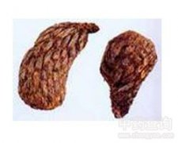

绵马贯众

拼音
Mián Mǎ Guàn Zhònɡ
别名
贯众、贯仲
来源
本品为鳞毛蕨科植物粗茎鳞毛蕨Dryopteris crassirhizoma Nakai 的干燥根茎及叶柄残基。秋季采挖，削去叶柄，须根，除去泥沙，晒干。
生境分布
生于林下湿地。主产黑龙江、吉林、辽宁。
药材特点
多年生草本，高可达1M。根茎粗大，连同叶柄基部密生褐棕色卵状披针形大鳞片。叶簇生，叶柄长10～25cm；二回羽裂，羽片20～30对，裂片紧密，矩圆形，圆头，几为全缘或先端有钝锯齿，两面及叶轴上有黄褐色鳞片。孢子囊群颁于叶片中部以上的羽片上，生于小脉中部以下，每裂片1～4对，囊群盖圆肾形，棕色。
性状
本品呈长倒卵形，略弯曲上端钝圆或截形，下端较尖，有的纵剖为两半，长7～20cm,直径4～8cm。表面黄棕色至黑褐色，密被排列整齐的叶柄残基及鳞片，并有弯曲的须根。叶柄残基呈扁圆形，长3～5cm，直径0.5～1.0cm；表面有纵棱线，质硬而脆，断面略平坦，棕色，有黄白色维管束5～13个，环列；每个叶柄残基的外侧常有3条须根，鳞片条状披针形，全缘，常脱落。质坚硬，断面略平坦，深绿色至棕色，有黄白色维管束5～13个，环列，其外散有较多的叶迹维管束。气特异，味初淡而微涩，后渐苦、辛。
性味
苦，微寒；有小毒。
功能主治
清热解毒，驱虫。用于虫积腹痛，疮疡。绵马贯众炭止血，用于崩漏。
用法用量
4.5～9.0g。
化学成分
含绵马精（filmarone），分解产生：绵马酸（filicicacid）BBB、PBB、PBP、黄绵马酸（flavaspidic acid）BB、PB、AB；白绵马素（albaspidin）AA、BB、PB等。
药理作用
1：无药理作用数据
摘录
《中国药典》